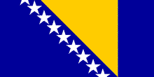

Službeni naziv: Bosna i Hercegovina (BiH)
Zastava i Grb:

Geografska lokacija: Bosna i Hercegovina se nalazi na zapadnom dijelu Balkanskog poluotoka.
Pogranične zemlje: Republika Srbija na sjeveroistoku, Republika Crna Gora na jugoistoku, Republika Hrvatska na sjeveru, zapadu i jugu.
Administrativna podjela: BiH je administrativno podjeljena na dva entiteta: Federacija Bosne i Hercegovine (F BiH) i Republika Srpska (RS) i Brčko Distrikt.
Entitetska struktura: FBiH je administrativno podjeljena na 10 kantona.
Kantoni su podjeljeni na općine. Na području F BiH je 79 općina.
Republika Srpska je administrativno podjeljenja na 62 općine.
Grad Brčko je zasebna administrativna jedinica - Distrikt.
Površina: Bosna i Hercegovina ukupno pokriva 51 209,2 km². Od toga: kopno 51 197 km² i more 12,2 km²
Klima: Pretežno kontinentalna, mediteranska na jugu
Broj stanovnika: 3531159 - Popis (30.09.2013. godine)
Struktura stanovnika: Bošnjaci, Hrvati, Srbi i pripadnici ostalih naroda
Glavni grad: Sarajevo
Službeni jezici: Bosanski, Hrvatski, Srpski i dva pisma (latinica i ćirilica)
Zvanična valuta: Konvertibilna marka (KM). (1 KM = 0,511292 Euro)[1]
Najniža tačka: grad Neum, 0 m
Najviša tačka: Maglić, 2386 m
Obalna linija: 21,2 km
Bosna i Hercegovina se sastoji od četiri velike geografske cjeline. Srednja Bosna (12920 ckm, 1249000 stanovnika) zahvaća planinski srednjobosanski prostor; to je najrazvijeniji dio države koji je od najstarijih vremena raskršće i stjecište različitih utjecaja i interesa susjednih peripanonskih, krških i sub - mediteranskih krajeva. Bosansko-hercegovački visoki krš (11842 ckm, 325000 stanovnika) obuhvaća planinsko-krški prostor zapadne Bosne i Hercegovine; to je najslabije naseljen i najsiromašniji dio države - samo je 9% površine obradivo, a u gradovima živi manje od 30% stanovnika. Mediteranska regija, tzv. Niska Hercegovina (5399 ckm, 296000 stanovnika) najmanja je geografska cjelina Bosne i Hercegovine, to je zagorski prostor srednjeg primorja[2].
[1] http://www.bhas.ba/?option=com_content&view=article&id=52&itemid=80&lang=ba
[2] http://www.mvp.gov.ba/dobro_dosli_u_bih/geografski_podaci/?id=237